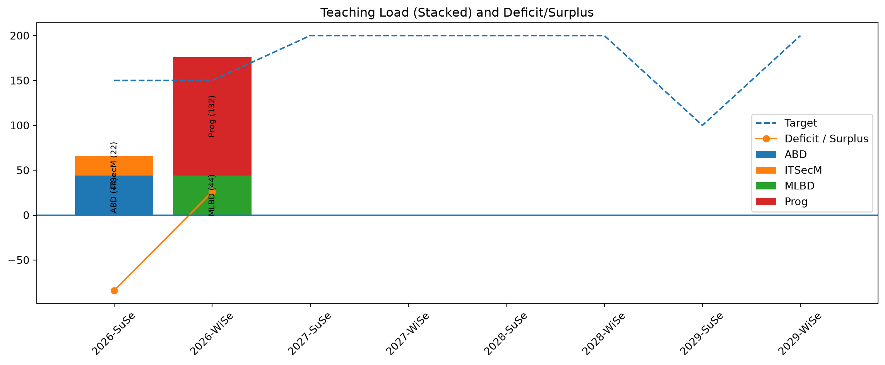

Code
import yaml
from pathlib import Path
import pandas as pd
import matplotlib.pyplot as plt
records = []
for file in Path(".").rglob("*.qmd"):
text = file.read_text(encoding="utf-8")
if text.startswith("---"):
yaml_block = text.split("---")[1]
meta = yaml.safe_load(yaml_block)
if meta and "teaching_load" in meta and "semester" in meta:
semester = meta["semester"]
title = meta.get("title_short", file.stem)
tl = meta["teaching_load"]
if isinstance(tl, dict):
records.append({
"semester": semester,
"course": title,
"hours": tl.get("hours", 0)
})
elif isinstance(tl, list):
for item in tl:
if isinstance(item, dict):
records.append({
"semester": semester,
"course": title,
"hours": item.get("hours", 0)
})
df = pd.DataFrame(records)
# --- pivot for stacked bars ---
df_pivot = df.pivot_table(
index="semester",
columns="course",
values="hours",
aggfunc="sum",
fill_value=0
)
def parse_semester(sem):
year, term = sem.split("-")
term_order = {"SuSe": 1, "WiSe": 2}
return int(year), term_order.get(term, 0)
# sort semesters
order_df = df_pivot.index.to_series().apply(parse_semester)
order_df = pd.DataFrame(order_df.tolist(), index=df_pivot.index, columns=["year", "term_order"])
df_pivot = df_pivot.loc[order_df.sort_values(["year", "term_order"]).index]
# --- extend future semesters ---
max_year = order_df["year"].max()
future_semesters = [f"{y}-{t}" for y in range(max_year + 1, max_year + 4) for t in ["SuSe", "WiSe"]]
for sem in future_semesters:
if sem not in df_pivot.index:
df_pivot.loc[sem] = 0
df_pivot = df_pivot.sort_index(key=lambda x: x.map(parse_semester))
# totals
df_total = df_pivot.sum(axis=1).reset_index()
df_total.columns = ["semester", "hours"]
# --- targets ---
targets = {
"2026-SuSe": 150,
"2026-WiSe": 150,
"2029-SuSe": 100,
}
df_total["target"] = df_total["semester"].apply(lambda x: targets.get(x, 200))
# mark real data
real_semesters = set(df["semester"])
df_total["has_data"] = df_total["semester"].isin(real_semesters)
# per-semester deficit/surplus (only real data)
df_total["difference"] = df_total.apply(
lambda row: row["hours"] - row["target"] if row["has_data"] else None,
axis=1
)
print(df_total[["semester", "hours", "target", "difference"]])
# --- plot ---
plt.figure(figsize=(12, 5))
bottom = pd.Series([0]*len(df_pivot), index=df_pivot.index)
for col in df_pivot.columns:
values = df_pivot[col]
plt.bar(df_pivot.index, values, bottom=bottom, label=col)
# labels inside stacked bars
for i, (sem, val) in enumerate(values.items()):
if val > 10: # avoid clutter for very small segments
y_pos = bottom[sem] + val / 2
label = f"{col} ({int(val)})"
plt.text(
i,
y_pos,
label,
ha='center',
va='center',
rotation=90,
fontsize=8
)
bottom += values
# dashed target line
plt.plot(df_total["semester"], df_total["target"], linestyle="--", label="Target")
# connected deficit/surplus line (only real semesters)
df_line = df_total[df_total["difference"].notna()]
plt.plot(df_line["semester"], df_line["difference"], marker="o", label="Deficit / Surplus")
plt.axhline(0)
plt.xticks(range(len(df_pivot.index)), df_pivot.index, rotation=45)
plt.legend()
plt.title("Teaching Load (Stacked) and Deficit/Surplus")
plt.tight_layout()
plt.show() semester hours target difference
0 2026-SuSe 66 150 -84.0
1 2026-WiSe 176 150 26.0
2 2027-SuSe 0 200 NaN
3 2027-WiSe 0 200 NaN
4 2028-SuSe 0 200 NaN
5 2028-WiSe 0 200 NaN
6 2029-SuSe 0 100 NaN
7 2029-WiSe 0 200 NaN